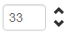
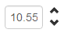

Spin Edit for Twitter Bootstrap
A spin edit control for Twitter Bootstrap.
 Demo
Click here for a live demo.Usage
This component relies on Twitter Bootstrap and jQuery.
Basic usage:
<script type="text/javascript" src="jquery.js"></script> <script type="text/javascript" src="bootstrap.js"></script> <script type="text/javascript" src="bootstrap-spinedit.js"></script> <link rel="stylesheet" type="text/css" href="bootstrap.css" /> <link rel="stylesheet" type="text/css" href="bootstrap-spinedit.css" /> <input type="text" id="spinEdit" /> <script type="text/javascript"> $('#spinEdit').spinedit(); </script>
You can use the following additional options to modify the behaviour of the spin edit control:
- value: The initial value (default 0).
- minimum: The minimum allowed value (default 0).
- maximum: The maximum allowed value (default 100).
- step: The amount that control uses to increase or decrease its vaule (default 1).
- numberOfDecimals: The number of allowed decimals (default 0).
For example:
<script type="text/javascript" src="jquery.js"></script> <script type="text/javascript" src="bootstrap.js"></script> <script type="text/javascript" src="bootstrap-spinedit.js"></script> <link rel="stylesheet" type="text/css" href="bootstrap.css" /> <link rel="stylesheet" type="text/css" href="bootstrap-spinedit.css" /> <input type="text" id="spinEdit" /> <script type="text/javascript"> $('#spinEdit').spinedit({ minimum: -10000, maximum: 10000, step: 100, value: 0, numberOfDecimals: 0 }); </script>
Methods
setValue
Set the value of the spin edit.
$('#spinEdit').spinedit('setValue', 100);
setMinimum
Set the minimum allowed value of the spin edit.
$('#spinEdit').spinedit('setMinimum', -10000);
setMaximum
Set the maximum allowed value of the spin edit.
$('#spinEdit').spinedit('setMaximum', 10000);
setStep
Set the step, by which the value of the spin edit is increased / decreased.
$('#spinEdit').spinedit('setStep', 100);
increase
Increase the value of the spin edit with the value defined by its step property.
$('#spinEdit').spinedit('increase');
decrease
Decrease the value of the spin edit with the value defined by its step property.
$('#spinEdit').spinedit('decrease');
setNumberOfDecimals
Sets the number of allowed decimals.
$('#spinEdit').spinedit('setNumberOfDecimals', 2);
Events
The spin edit supports one event, namely valueChanged. This event is triggered when its value changes.
The event object has one additional property:
- value: The new value of the spin edit.
$('#spinEdit').on("valueChanged", function (e) {
console.log(e.value);
});
License
This code is made available under the Apache License v2.0, the same as Twitter Bootstrap.
Contact
Questions or suggestions? Mail me at geersch@gmail.com.
Follow @cgeers on Twitter.